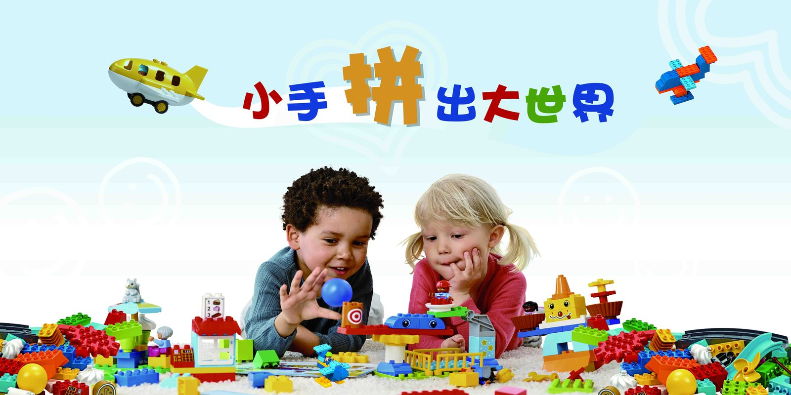
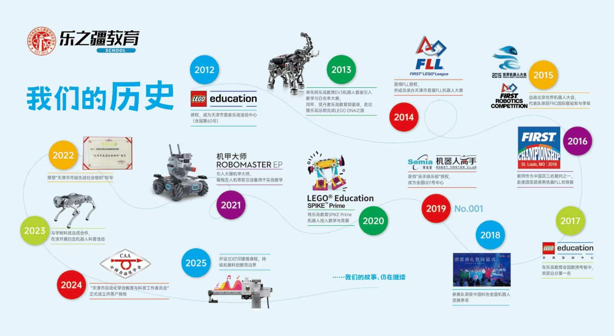
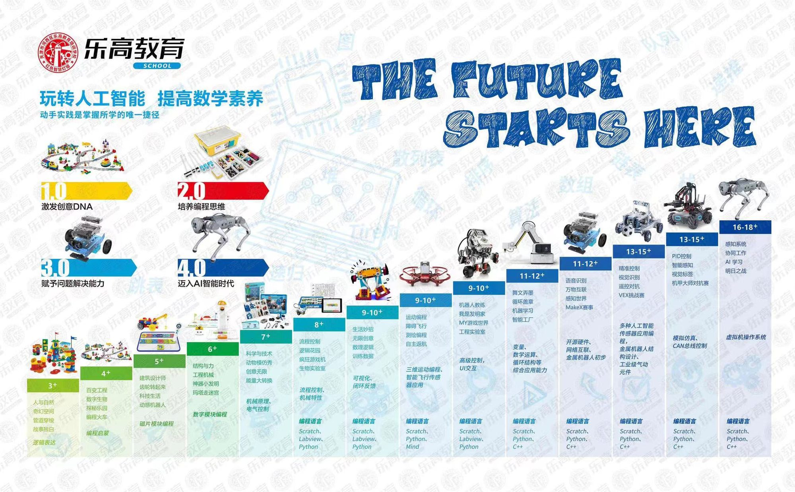
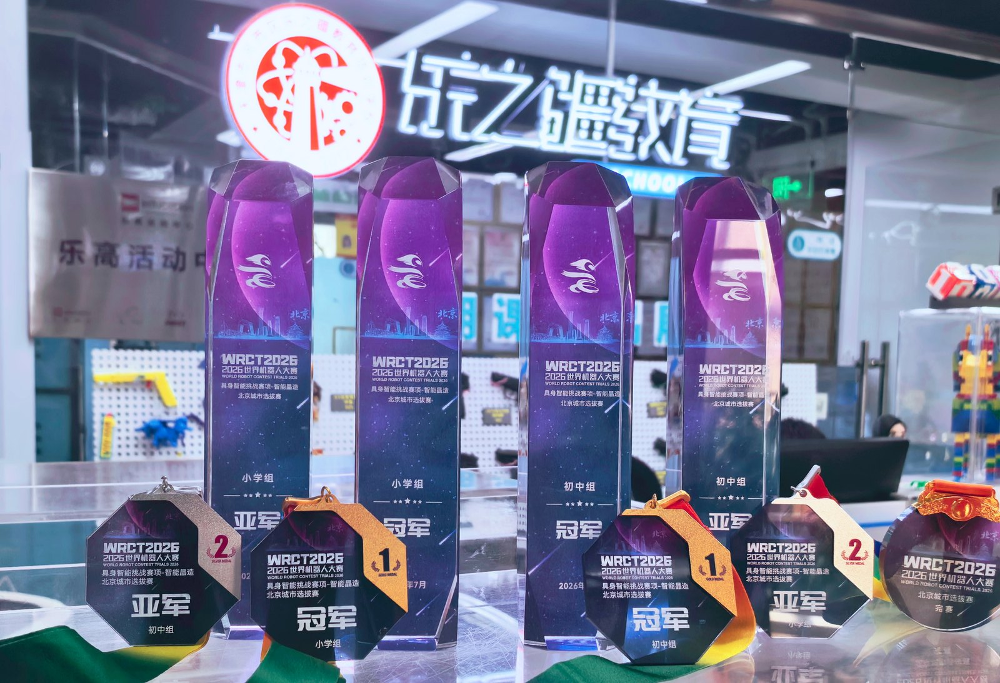

5–6 岁 · 启蒙体验
COURSE 01
齿轮机械与动力搭建
认识齿轮、杠杆、连杆与动力传动，在积木搭建中理解简单机械原理；课堂以项目任务驱动，保护孩子最初的好奇心与动手欲。


天津市河西区乐之疆教育培训学校（原天津市河西区乐高教育培训学校）成立于 2012 年，同年我校与乐高教育中国区唯一代理——北京西觅亚合作，建立天津市首家丹麦乐高教育部授权的"乐高活动中心-天津晶采中心 LEGO EDUCATION CENTER（全国 NO.060）"。学校坐落于天津市河西区下瓦房晶采大厦，行政主管单位为天津市河西区民政局，业务主管单位为天津市河西区教育局。
建校十余年来，我校秉承"立德树人"的教育理念，在教学过程中通过人工智能机器人的设计、制作以及编程学习，让孩子成为主动思考者、学习者、实践者和创造者。

围绕机器人、编程、创客电子、3D 与 AI 五条线索设置阶梯课程，孩子按测评结果进入对应班型，能力达标后逐级升班。

5–6 岁 · 启蒙体验认识齿轮、杠杆、连杆与动力传动，在积木搭建中理解简单机械原理；课堂以项目任务驱动，保护孩子最初的好奇心与动手欲。
 6 岁起 · 进阶
6 岁起 · 进阶
使用可编程机器人套件，学习马达、传感器与动作控制，完成巡线、抓取、机械手等任务项目，并提供校内外展示与竞赛项目辅导。
 7 岁起 · 图形化编程
7 岁起 · 图形化编程
学习事件、循环、变量与条件判断，用积木式指令创作故事、动画、音乐与小游戏，在作品完成中建立顺序、分支与循环的编程思维。
 进阶阶段 · 代码编程
进阶阶段 · 代码编程
从变量、数据类型、判断与循环等基础语法起步，逐步完成 2D 小游戏与小工具应用，为后续接触人工智能与数据应用打下代码基础。
 进阶阶段 · 创客硬件
进阶阶段 · 创客硬件
使用面包板、LED、传感器与主控板，动手搭建智能小灯、报警器、小车等创客作品，理解电路、输入与输出之间的关系。
 拓展方向 · 科技前沿
拓展方向 · 科技前沿
体验基础三维建模与 3D 打印流程；认识人工智能，了解语音识别、图像识别等常见 AI 应用场景，建立面向未来的科技视野。
说明：以上为学校课程方向介绍，具体班型、适龄段、课时与收费以到校测评后出具的当期课表与方案为准。

党建示范、社会组织评估、青少年机器人竞赛与行业任职，以下为学校历年获得的荣誉与任职情况，竞赛类为团队项目成绩。

2026 年 7 月，世界机器人大赛（WRCT2026）北京城市选拔赛「具身智能挑战赛项—智能晶造」，小学组冠军、亚军与初中组冠军、亚军奖杯、奖牌。
中共天津市河西区委组织部
中共天津市河西区教育局党委
天津市民政局
第 18 届中国青少年机器人竞赛 · 中国科学技术协会
全国中小学信息技术与实践大赛
第 21 届天津市青少年机器人竞赛 · 天津市科学技术协会、天津市教委
天津市科学技术协会自动化学会
天津市机器人产业协会
天津市自动化学会科普基地
以下评分、评价标签与精选评价摘自大众点评店铺公开页面（473 条评价），评价原文保留平台用户化名与日期。
娃在这上了八年了，也是他目前唯一主动想上的兴趣班。一直跟着倪老师上课，从刚开始的小宝宝到现在大哥哥，时间过得真快，娃还是一如既往地喜欢倪老师——超级耐心且热爱自己的工作，可盐可甜，既能正向引导又会偶尔展现威严。孩子玩得挺开心，又能学到东西，赞一个！
我们从幼儿园开始就在这里上课，会根据孩子的水平推荐上课的级别，到了一定程度也会升班，上课形式不死板。孩子一直和王老师上课，孩子很喜欢王老师的授课形式，拓展的很多，寓教于乐。
孩子跟着倪老师上了两三年课程了，孩子进步很大。倪老师很专业，而且非常耐心，教学风格很幽默，启发式教学真的很棒，会一直坚持下去。
数据来源：大众点评「乐之疆教育学校·AI人工智能·机器人编程·3d建模打印(晶采中心)」店铺公开页面；完整 473 条评价与问答需在大众点评 App 内查看。
以下问答整理自校区固定咨询口径，覆盖入学年龄、零基础、课时安排、收费、竞赛升学与师资效果；点击问题展开答案，也可以直接使用右下角问答窗口提问。
了解学校发展、课程进阶路径、家长常见问题与校区到访信息。
留下孩子年龄与意向课程，校区老师会在工作时间与你联系；也可直接按下方地址到访。
团购名额、有效期与购买规则以大众点评店铺当期页面为准。